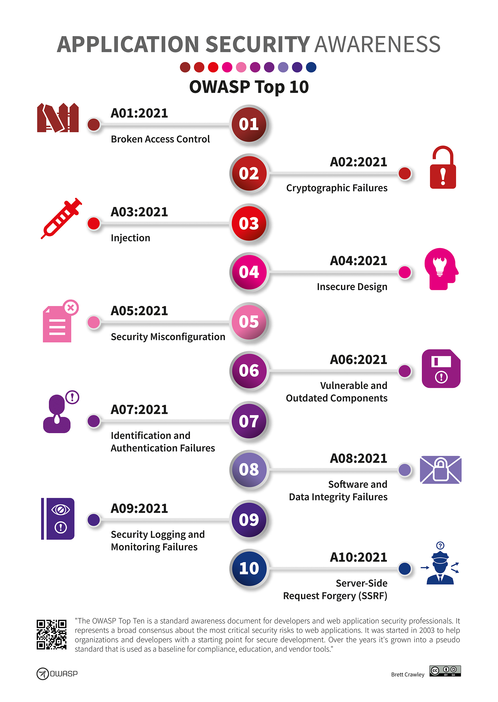

Not a Compliance Checkbox Exercise
Most ISO 27001 guides read like they were written by auditors for auditors. This one is written by a DevOps engineer who spent 6 months implementing these controls across three AWS accounts and two Kubernetes clusters — and then automated the evidence collection so audit prep went from 3 weeks to 3 days.

I'll cover the 10 ISO 27001 Annex A controls most relevant to DevOps teams, with real implementations in AWS and Kubernetes, and the automation that makes ongoing compliance sustainable.
A.9 — Access Control
What the Auditor Asks
"Show me how you control who has access to what, how access is granted and revoked, and how you review access periodically."
How We Implement It
- AWS IAM: No long-lived credentials. All human access via AWS SSO with MFA. Service accounts use IRSA (IAM Roles for Service Accounts)
- Kubernetes RBAC: Namespace-scoped roles, no cluster-admin for developers. Access via kubectl proxy through SSO
- Quarterly access reviews: Automated script that dumps all IAM users, roles, and K8s RBAC bindings into a spreadsheet for manager review
# Automated access review script (runs quarterly via Lambda)
aws iam generate-credential-report
aws iam get-credential-report --output text --query Content | base64 -d > iam-report.csv
# Find users with console access but no MFA
aws iam list-users --query 'Users[*].UserName' --output text | while read user; do
mfa=$(aws iam list-mfa-devices --user-name "$user" --query 'MFADevices' --output text)
if [ -z "$mfa" ]; then
echo "WARNING: $user has no MFA configured"
fi
done
# Kubernetes RBAC audit
kubectl get clusterrolebindings -o json | jq '.items[] |
select(.roleRef.name == "cluster-admin") |
{name: .metadata.name, subjects: .subjects}'Store the output of these scripts in an S3 bucket with versioning enabled. When the auditor asks for "evidence of quarterly access reviews," you hand them a link to the S3 bucket with timestamped reports. No scrambling.
A.10 — Cryptography
What the Auditor Asks
"Show me your encryption policy, what's encrypted, and how you manage keys."
How We Implement It
- At rest: KMS encryption on all RDS, S3, EBS, and DynamoDB. Account-level default EBS encryption enabled
- In transit: TLS 1.2+ everywhere. ACM certificates with auto-renewal. No self-signed certs in production
- Key rotation: KMS automatic key rotation enabled (annual). Application-level secrets rotated every 90 days via Secrets Manager
# AWS Config rule: verify all EBS volumes are encrypted
aws configservice put-config-rule --config-rule '{
"ConfigRuleName": "encrypted-volumes",
"Source": {
"Owner": "AWS",
"SourceIdentifier": "ENCRYPTED_VOLUMES"
}
}'
# AWS Config rule: verify all S3 buckets have encryption
aws configservice put-config-rule --config-rule '{
"ConfigRuleName": "s3-bucket-server-side-encryption-enabled",
"Source": {
"Owner": "AWS",
"SourceIdentifier": "S3_BUCKET_SERVER_SIDE_ENCRYPTION_ENABLED"
}
}'A.12 — Operations Security
What the Auditor Asks
"Show me your change management process, how you handle capacity, and how you separate dev/test/prod."
How We Implement It
This is where GitOps shines as compliance evidence. Every infrastructure change goes through a pull request with:
- Code review by at least one peer (enforced via branch protection)
- Automated tests (Terraform plan, policy checks via OPA/Conftest)
- Approval from a designated approver
- Automated deployment via ArgoCD (no manual kubectl apply)
GitOps = Change Management Evidence. Every Git commit is a timestamped, attributed, reviewed change record. The auditor can see who changed what, when, who approved it, and what tests passed. This is better evidence than any ticketing system.
# Branch protection as change management control
# GitHub API — enforce PR reviews
gh api repos/{owner}/{repo}/branches/main/protection -X PUT -f '{
"required_pull_request_reviews": {
"required_approving_review_count": 1,
"dismiss_stale_reviews": true,
"require_code_owner_reviews": true
},
"required_status_checks": {
"strict": true,
"contexts": ["terraform-plan", "policy-check", "security-scan"]
},
"enforce_admins": true,
"restrictions": null
}'A.13 — Communications Security
What the Auditor Asks
"Show me how you protect data in transit and segment your networks."
How We Implement It
- VPC segmentation: Separate VPCs for prod/staging/dev. No VPC peering between prod and non-prod
- Network policies: Default-deny Kubernetes NetworkPolicies with explicit allowlists
- mTLS: Istio service mesh with STRICT mTLS between all services
- VPC Flow Logs: Enabled on all VPCs, stored in S3 for 90 days
A.14 — System Acquisition, Development, and Maintenance
What the Auditor Asks
"Show me how security is built into your development process."
How We Implement It
Security scanning is embedded in every CI/CD pipeline:
| Stage | Tool | What It Checks | Blocks Deploy? |
|---|---|---|---|
| Pre-commit | gitleaks | Secrets in code | Yes |
| Build | Trivy | Container image vulnerabilities | Yes (Critical/High) |
| Build | Checkov | Terraform misconfigurations | Yes |
| Test | OWASP ZAP | DAST — runtime vulnerabilities | Yes (High) |
| Deploy | OPA/Gatekeeper | K8s admission control policies | Yes |
A.15 — Supplier Relationships
What the Auditor Asks
"Show me how you manage third-party risk — cloud providers, SaaS tools, dependencies."
How We Implement It
- Dependency scanning: Dependabot/Renovate for automated dependency updates with vulnerability alerts
- Vendor assessment: Annual review of all SaaS vendors' SOC 2 reports
- AWS shared responsibility: Document which controls AWS owns vs. which we own
- Supply chain security: Container images pinned to SHA digests, not tags. Base images from verified publishers only
A.16 — Incident Management
What the Auditor Asks
"Show me your incident response process, recent incidents, and what you learned."
How We Implement It
- PagerDuty: Escalation policies with defined response times per severity
- Postmortems: Blameless postmortem for every SEV1/SEV2 incident, stored in Confluence with action items tracked in Jira
- GuardDuty: Automated threat detection with Lambda-based auto-remediation for common findings
A.17 — Business Continuity
What the Auditor Asks
"Show me your disaster recovery plan, backup strategy, and test results."
How We Implement It
- RDS: Automated backups with 35-day retention, cross-region read replicas
- S3: Cross-region replication for critical buckets
- EKS: Velero backups of cluster state, daily to S3
- DR testing: Quarterly failover test to DR region, documented with screenshots and timing
# Velero backup schedule for K8s disaster recovery
apiVersion: velero.io/v1
kind: Schedule
metadata:
name: daily-cluster-backup
namespace: velero
spec:
schedule: "0 2 * * *"
template:
includedNamespaces:
- production
- staging
storageLocation: aws-dr-region
ttl: 720h # 30 days retentionA.18 — Compliance
What the Auditor Asks
"Show me how you ensure ongoing compliance, not just point-in-time."
How We Implement It
AWS Config + Security Hub provides continuous compliance monitoring:
# Enable Security Hub with ISO 27001 standard
aws securityhub enable-security-hub \
--enable-default-standards
aws securityhub batch-enable-standards \
--standards-subscription-requests '[
{
"StandardsArn": "arn:aws:securityhub:::standards/aws-foundational-security-best-practices/v/1.0.0"
}
]'Automated Evidence Collection
The biggest time saver: a Lambda function that runs monthly and collects all audit evidence into a structured S3 bucket:
| Evidence Type | ISO Control | Collection Method | Frequency |
|---|---|---|---|
| IAM credential report | A.9 | AWS IAM API | Monthly |
| Encryption compliance | A.10 | AWS Config rules | Continuous |
| Change log (Git history) | A.12 | GitHub API | Monthly |
| Network segmentation proof | A.13 | VPC/SG export | Monthly |
| Vulnerability scan results | A.14 | Trivy/Security Hub | Per deploy |
| Incident postmortems | A.16 | Confluence API | Per incident |
| Backup test results | A.17 | DR test runbook output | Quarterly |
Before automation, audit prep took 3 weeks of an engineer's time — pulling reports, taking screenshots, writing narratives. After automation, it takes 3 days: 1 day to review the auto-collected evidence, 1 day to fill gaps, 1 day to prepare the presentation for the auditor. The auditor was impressed — they said it was the most organized evidence package they'd seen.
Key Takeaways
- GitOps is your best friend for A.12 — every change is a reviewed, approved, timestamped record
- AWS Config + Security Hub provides continuous compliance monitoring for most controls
- Automate evidence collection — manual audit prep doesn't scale and burns out engineers
- Store evidence in S3 with versioning — auditors love timestamped, immutable evidence
- Embed security in CI/CD (A.14) — it's both good security and good compliance evidence
- Quarterly access reviews are the most commonly failed control — automate the report generation
- ISO 27001 and DevOps are complementary — good DevOps practices naturally satisfy most controls